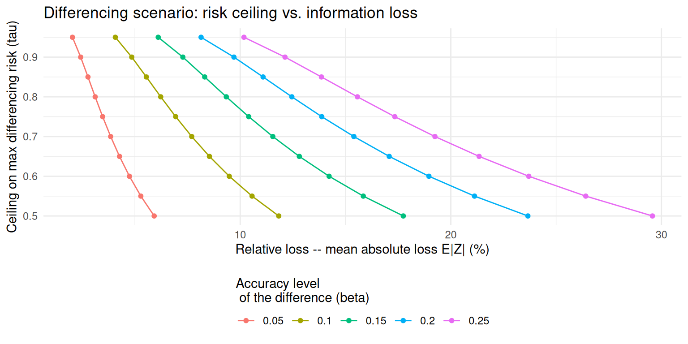
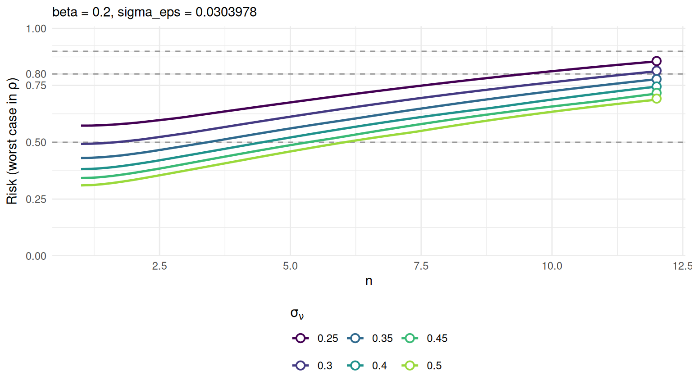
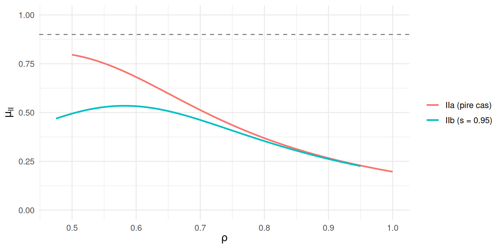

params <- pm_params()
params
#> <pm_params>
#> policy
#> dominance : beta = 0.2, tau = 0.9
#> p%-rule : beta = 0.1, tau = 0.9, s = 0.95
#> diff : beta = 0.05, tau = 0.95
#> parameters of the mechanism
#> sigma_nu = <not set>
#> sigma_eps = <not set>
#> n = <not set>5 Calibrer la méthode
Le chapitre précédent comparait des candidats. Celui-ci en fait une procédure : une suite de décisions ordonnées, chacune ne dépendant que de la précédente. Cette structure n’est pas arbitraire — elle découle du mécanisme lui-même, puisque seul \(\sigma_\varepsilon\) contrôle la différenciation, et que la plage de perte ne dépend jamais de \(n\).
Chaque étape suit le même triptyque : explorer une grille théorique, visualiser l’arbitrage, enregistrer la décision dans l’objet de paramètres.
5.1 Étape 1 — le bruit de différenciation fixe \(\sigma_\varepsilon\)
\(\sigma_\varepsilon\) est le seul paramètre capable de contenir le risque de différenciation. C’est aussi celui qui fixe le plancher de perte subi par toutes les cellules, y compris les moins sensibles : le minimiser revient à minimiser ce bruit universel.
Le risque de différenciation admet une borne supérieure ne dépendant que de \(\sigma_\varepsilon\), et cette borne s’inverse analytiquement : à \((\beta, \tau)\) donnés, la valeur requise se calcule exactement, sans simulation.
grille_diff <- pm_calib_diff(tau = seq(0.80, 0.95, by = 0.01))
head(grille_diff)
#> beta tau sigma_eps EZ CI
#> 1 0.05 0.50 0.07413 5.915 14.529
#> 2 0.05 0.55 0.06619 5.281 12.973
#> 3 0.05 0.60 0.05941 4.740 11.644
#> 4 0.05 0.65 0.05350 4.269 10.486
#> 5 0.05 0.70 0.04824 3.849 9.455
#> 6 0.05 0.75 0.04347 3.468 8.519plot(grille_diff, loss = "EZ")
La lecture se fait dans les deux sens : pour un plafond de risque accepté, on lit la perte plancher qu’il impose ; pour une perte tolérée, le risque résiduel. Retenons le plafond par défaut, \(\tau_{\text{DIFF}} = 0{,}90\) à \(\beta_{\text{DIFF}} = 0{,}05\).
params <- pm_commit_diff(params, beta = 0.05, tau = 0.90)
params$mechanism
#> $sigma_nu
#> [1] NA
#>
#> $sigma_eps
#> [1] 0.0304
#>
#> $n
#> [1] NAEnviron 3 % de bruit de fond : c’est la perturbation moyenne que subira une cellule sans contributeur dominant.
5.2 Étape 2 — la dominance fixe \(\sigma_\nu\) et \(n\)
\(\sigma_\varepsilon\) étant figé, les deux paramètres restants se choisissent sur le scénario I. La contrainte porte sur deux inconnues à la fois : ce n’est plus une inversion, mais une frontière.
grille_dom <- pm_calib_dominance(
params,
sigma_nu = seq(0.25, 0.5, by = 0.05),
n = seq(1, 12, by = 0.2)
)
summary(grille_dom) |> head(6)
#> sigma_nu sigma_eps n beta rho_at_max_risk risk_max EZ_min EZ_max CI_min
#> 0.25 0.03 1.0 0.2 1.00 0.573 2.458 20.09 6.038
#> 0.25 0.03 1.2 0.2 0.98 0.573 2.432 20.09 5.975
#> 0.25 0.03 1.4 0.2 0.98 0.575 2.427 20.09 5.961
#> 0.25 0.03 1.6 0.2 0.96 0.577 2.426 20.09 5.959
#> 0.25 0.03 1.8 0.2 0.96 0.581 2.425 20.09 5.958
#> 0.25 0.03 2.0 0.2 0.96 0.584 2.425 20.09 5.958
#> CI_max
#> 49.36
#> 49.36
#> 49.36
#> 49.36
#> 49.36
#> 49.365.2.1 La règle : le plus grand \(n\) admissible
Les deux objectifs varient de façon monotone et opposée en \(n\). L’utilité s’améliore à tout \(\rho < 1\), puisque le bruit se retire des cellules de dominance intermédiaire ; le pire risque, lui, augmente. Il n’existe donc aucun optimum intérieur : le meilleur choix est au bord de l’ensemble admissible.
Ce raisonnement ne dépend pas des données : comme l’utilité progresse à chaque \(\rho\), aucune pondération par le profil de dominance réel ne pourrait faire préférer un \(n\) plus petit.
frontiere <- pm_suggest_n(params, sigma_nu = seq(0.25, 0.5, by = 0.05))
frontiere
#> sigma_nu sigma_eps beta tau target n_max risk_at_n_max EZ_rho1 EZ_rho_dom
#> 1 0.25 0.0304 0.2 0.9 0.9 14.28 0.9 20.09 2.561
#> 2 0.30 0.0304 0.2 0.9 0.9 16.15 0.9 24.06 2.511
#> 3 0.35 0.0304 0.2 0.9 0.9 17.65 0.9 28.03 2.486
#> 4 0.40 0.0304 0.2 0.9 0.9 18.90 0.9 32.01 2.471
#> 5 0.45 0.0304 0.2 0.9 0.9 19.97 0.9 35.99 2.461
#> 6 0.50 0.0304 0.2 0.9 0.9 20.92 0.9 39.97 2.454
#> CI_rho1 CI_rho_dom
#> 1 49.36 6.292
#> 2 59.10 6.169
#> 3 68.86 6.106
#> 4 78.62 6.069
#> 5 88.40 6.045
#> 6 98.18 6.029Les colonnes de perte départagent les points de la frontière — tous respectent le plafond exactement, le choix entre eux est donc purement un choix d’utilité. Et il a deux faces : monter en \(\sigma_\nu\) dégrade les contributeurs uniques (\(\rho = 1\)) mais épargne les cellules situées au seuil de dominance.
pm_plot_risk_max(grille_dom, x_axis = "n",
tau = params$policy$dominance$tau,
mark_frontier = TRUE)
En dessous d’un certain \(\sigma_\nu\), aucune valeur de \(n\) n’est admissible : le niveau de bruit est structurellement insuffisant pour tenir le plafond, quelle que soit la forme donnée à la modulation.
5.2.2 Enregistrer la décision
Retenons \(\sigma_\nu = 0{,}4\) et le \(n\) correspondant, arrondi vers le bas — le risque croissant avec \(n\), c’est le seul arrondi conservateur.
params <- pm_commit_dominance(params, sigma_nu = 0.4, n = 4)
params
#> <pm_params>
#> policy
#> dominance : beta = 0.2, tau = 0.9
#> p%-rule : beta = 0.1, tau = 0.9, s = 0.95
#> diff : beta = 0.05, tau = 0.9
#> parameters of the mechanism
#> sigma_nu = 0.4
#> sigma_eps = 0.0304
#> n = 4Le message restitue le compromis obtenu : le pire risque, où il est atteint, et la plage de perte du plancher au plafond. Savoir que le pic se situe au voisinage de \(\rho \approx 0{,}8\) dit immédiatement quelles cellules sont les plus exposées.
5.3 Étape 3 — contrôler le scénario II
Le couple retenu détermine la protection résiduelle contre l’attaque interne. Aucune décision ne s’y prend : c’est une vérification.
Le pire cas, dit IIa, suppose que les deux plus gros contributeurs se partagent toute la cellule (\(\rho + \rho_2 = 1\)). La version relâchée IIb leur en laisse 95 %.
p <- params$mechanism
beta_II <- params$policy$prule$beta
verifier_II <- function(s) {
rho <- seq(s / 2, min(1, s), by = 0.001) # rho reste le plus gros contributeur
data.frame(
cas = if (s == 1) "IIa (pire cas)" else sprintf("IIb (s = %.2f)", s),
rho = rho,
risk = assess_risk_II(rho, s - rho, p$sigma_nu, p$sigma_eps, p$n, beta_II)
)
}
verif <- map(c(1, 0.95), verifier_II) |> list_rbind()
verif |>
group_by(cas) |>
summarise(risque_max = max(risk), rho_au_max = rho[which.max(risk)])
#> # A tibble: 2 × 3
#> cas risque_max rho_au_max
#> <chr> <dbl> <dbl>
#> 1 IIa (pire cas) 0.7961 0.5
#> 2 IIb (s = 0.95) 0.5345 0.582ggplot(verif, aes(rho, risk, colour = cas)) +
geom_line(linewidth = 0.9) +
geom_hline(yintercept = params$policy$prule$tau,
linetype = "dashed", colour = "grey50") +
scale_y_continuous(limits = c(0, 1)) +
labs(x = expression(rho), y = expression(mu[II]), colour = NULL)
Le constat est net et il faut l’assumer : le pire cas n’est pas maîtrisé. Deux contributeurs informés se partageant l’intégralité d’une cellule ne peuvent pas être protégés à des niveaux de perturbation compatibles avec une utilité acceptable. Dès que la configuration se relâche légèrement, en revanche, le mécanisme offre une protection réelle — de sorte que seules les configurations les plus extrêmes, et sans doute les moins fréquentes, restent exposées.
C’est une limite du mécanisme, à documenter dans la note méthodologique accompagnant la diffusion plutôt qu’à masquer.
5.4 Le résultat du calibrage
params
#> <pm_params>
#> policy
#> dominance : beta = 0.2, tau = 0.9
#> p%-rule : beta = 0.1, tau = 0.9, s = 0.95
#> diff : beta = 0.05, tau = 0.9
#> parameters of the mechanism
#> sigma_nu = 0.4
#> sigma_eps = 0.0304
#> n = 4Trois paramètres, obtenus sans aucune simulation ni recalage sur les données. L’objet est désormais prêt à l’emploi et suffit à lui seul pour perturber n’importe quel tableau de la campagne.
res <- pm_perturb(tables$region, "ca", "ca_x1", "ck", params,
x2 = "ca_x2", indicator = "chiffre_affaires")
assess_utility_empirical(res)[, c("n_cells", "mean_abs_dev", "theo_mean_abs")]
#> n_cells mean_abs_dev theo_mean_abs
#> 1 12 2.638 2.4325.5 Ce qu’il reste à surveiller
Le calibrage est analytique, mais il n’exonère pas de trois vérifications sur les données réelles.
Les cellules à total nul ou négatif ne sont pas protégées par un bruit multiplicatif et sortent du cadre : pm_perturb() les laisse intactes et les signale.
Le scénario IIa reste exposé, comme on vient de le voir.
Enfin, la gouvernance des clés conditionne la cohérence dans le temps : stabilité des clés individuelles, du nom des indicateurs et du nom des opérations. Un renommage entre deux campagnes change tous les tirages et rouvre l’attaque par moyennage (chapitre 3).